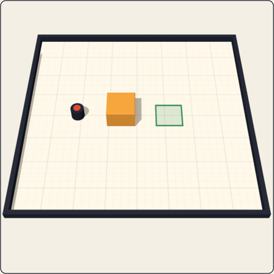
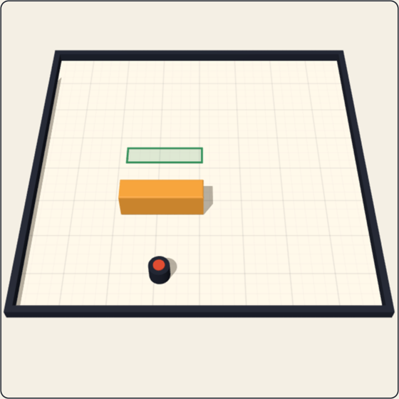
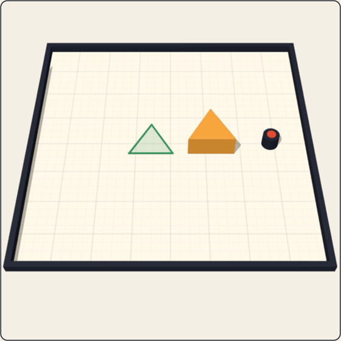
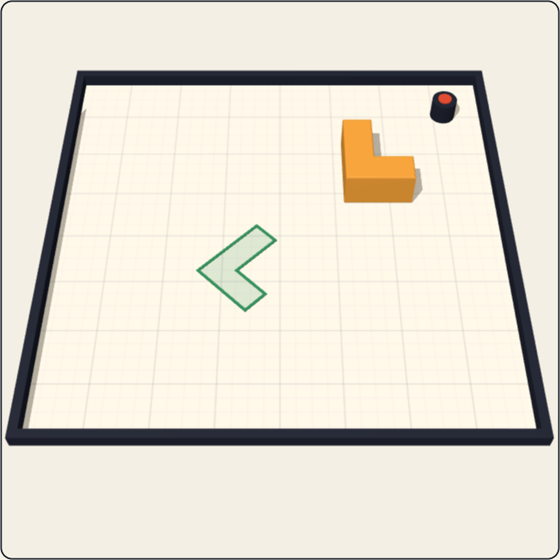
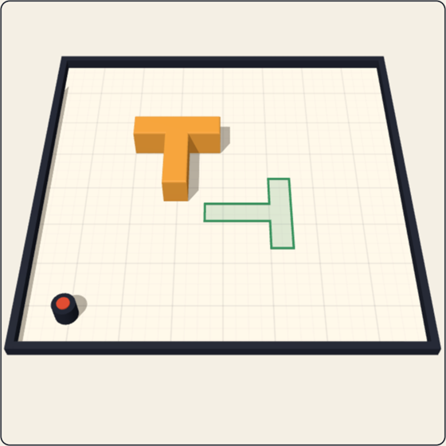
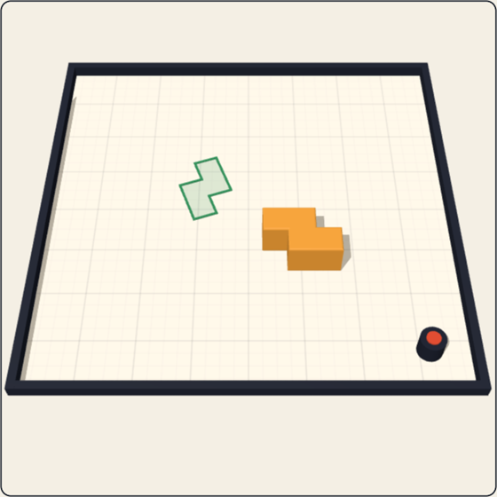

Can you out-push a decision model?
Push·CubeYou vs Jev, TypeSafe's decision model.
Sample Jev answers · live play needs a TypeSafe key
YouDrag the pin. You can only push.
Jev · instinctReads raw coordinates, picks direction · distance · aim.
Sample Jev answers · live play needs a TypeSafe key
Jev · thinking harderNot sure? It simulates 3 futures with real physics, then decides.
Sample Jev answers · live play needs a TypeSafe key
Six shapes. They slide and spin.






How it works
2D physics · pymunk
3D view · Three.js
Game server · FastAPI
Decisions · TypeSafe Jev
Runs on a laptop. No GPU.
Push·Cube
Fewest pushes onto the outline wins.
You vs Jev, TypeSafe's decision model